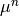

src package¶
Submodules¶
src.DGCG module¶
General controller of the DGCG algorithm package.
-
src.DGCG.set_model_parameters(alpha, beta, time_samples, H_dimensions, test_func, grad_test_func)¶ Set the the fundamental parameters of the model.
- Parameters
- alpha, beta: float
Regularization parameter of the regularization problem, must be positive.
- time_samples: numpy.ndarray
Ordered array of values between 0 and 1, with
time_samples[0] = 0andtime_samples[-1] = 1.- H_dimension: list[int]
List of dimensions of the considered Hilbert spaces
H_t.- test_funccallable[[int, numpy.ndarray], numpy.ndarray]
Function φ that defines the forward measurements. The first input is time, the second input is a list of elements in the domain Ω. It maps into a list of elements in H_t. See Notes for further reference.
- grad_test_funccallable[[int, numpy.ndarray], numpy.ndarray]
The gradient of the input function test_func. The inputs of the gradient are the same of those of the original function. Returns a tuple with each partial derivative.
- Returns
- None
Notes
It is required to set this values prior to defining atoms or taking measurements. This is because the input values fix the set of extremal points of the Benomou-Brenier energy, and the given kernels define the Forward and Backward measurement operators.
The
test_funcφ is the funciton that defines the forward measurements. The first input is a time sample in[0, 1, ..., T-1], withTthe total number of time samples. The second input is a list ofNelements in Ω, expressed as a (N,2)numpy.ndarray(Ω is of dimension 2).The output of φ is a list of
Nelements inH_t, since the dimension ofH_tis input withH_dimensions, then the output of φ(t, x) is a (N, H_dimensions[t])numpy.ndarrayThe function
grad_test_func∇φ has the same input, but the output is a (2, N, H_dimensions[t]) tuple representing the two partial derivatives ∂_x and ∂_y respectively.
-
src.DGCG.solve(data, **kwargs)¶ Solve the given dynamic inverse problem for input data.
This function will apply the Dynamic Generalized Conditional Gradient (DGCG) algorithm.
- Parameters
- datanumpy.ndarray
Array of
Tentries, each a numpy.ndarray of sizeH_dimensions[t]for eacht. See notes for further reference.- initial_measure
src.classes.measure, optional Initial guess for the DGCG algorithm. Default value is None corresponding the the zero measure.
- use_ffmmpegbool, optional
To indicate the use of the ffmpeg library. If set to false, matplotlib won’t be able to save the output videos as videos files. Nonetheless, it is possible to animate the measures with the DGCG.classes.measure.animate method.
- insertion_max_restartsint, optional
Hard limit on the number of allowed restarts for the multistart gradient descent at each iteration. Default 1000.
- insertion_min_restartsint, optional
Hard limit on the number of allowed restarts for the multistart gradient descent at each iteration. Default 20.
- results_folderstr, optional
name of the folder that will be created to save the simulation results. Default ‘results’.
- multistart_early_stopcallable[[int,int], int] optional
function to stop early as a function of the found stationary points. Default lambda n,m: np.inf.
- multistart_pooling_numint, optional
When insertion random curves, the algorithm will realize this given number of curves and then choose the one with best F(γ) value. The higher the value of this parameter, the more one samples on the best initial curves to descent. The drawback is that it slows down the proposition of random curves.
- log_outputbool, optional
Save the output of shell into a .txt inside the results folder. default False, to be improved. <+TODO+>
- Returns
- solution
src.classes.measure The computed solution.
- exit_flagtuple[int, str]
Tuple with a numeric indicator and a string with a brief description. <+TODO+> check this, add dual_gap exit value.
- solution
Notes
The
datainput corresponds to the gathered data with the defined forward operator when runningsrc.DGCG.set_model_parameters(). Each entry of this array correspond to the measurement at each time sample. Therefore, the size of that entry will correspond to the respectiveH_tspace.
src.checker module¶
-
src.checker.H_t_product(t, f_t, g_t)¶
-
src.checker.H_t_product_full(f, g)¶
-
src.checker.is_in_H(f)¶
-
src.checker.is_in_H_t(t, f_t)¶
-
src.checker.is_in_space_domain(x)¶
-
src.checker.is_valid_time(t)¶
-
src.checker.set_in_H_t(t, f_t)¶
src.config module¶
General configuration file.
Summary¶
This module contains all the configuration parameters that define the details of the DGCG algorithm. Al parameters are set at execution of DGCG.solve and then remain fixed.
Members¶
- results_folderstr, default ‘results’
By default, the algorithm stores at each iteration the iterate, graphs the convergence plots, dual gaps, found stationary points, etc. This variable indicates the name of the folder in which these are stored.
- logger
src.log_mod.logger, default None The logger class is involved in all the logging activities, like plotting, pickling data, terminal printing, etc. A logger object is created and then accessed by all the modules here via config.logger.
- Tint, default 51
The number of time samples of the problem.
- timenumpy.ndarray, default np.linspace(0, 1, T)
The respective time samples of the problem.
- time_weightsnumpy.ndarray, default np.ones(T)/T
The associated weights to each time sample. By default, these are equally weighted summing up to 1. Relevant when dealing with different uncertainty values for each time sample.
- alphafloat, default 0.1
Regularization coefficient of the problem
- betafloat, default 0.1
Regularization coefficient of the problem
- f_tlist[numpy.ndarray], default None
Input data in the problem, represents a list of elements in H_t for each t.
- measure_coefficient_too_lowfloat, default 1e-18
The measure class is a weighted sum of atoms. When the weight of an atom is lower than this threshold, it is automatically discarded.
- full_max_iterationint, default 1000
Maximum number of iterations of the algorithm.
- insertion_max_segmentsint, default 20
In the insertion step, during the multistart gradient descent, random curves are proposed for descense in insertion_mod.random_insertion The number of segments of the random curves is chosen at random, with this parameter defining the upper limit on the chosen segments.
- rejection_sampling_epsilonfloat, default 0.05
When generating random curves for insertion at insertion_mod.random_insertion, once the time nodes of the curve is defined, the spatial positions are chosed via the rejection_sampling algorithm. This parameter is involved in the definition of used function. In principle, the higher is this number, the faster the rejection sampling algorithm will find a candidate. But simultaneously, it will miss possible candidates that have values barely above 0.
- insertion_length_bound_factorfloat, default 1.1
When proposing curves to descend in insertion_mod.propose, it is known from the theory that any solution must not exceed a certain length that can be computed. If any proposed curve surpases this limit by a factor given by this parameter, it is automatically discarded.
- multistart_pooling_numberint, default 1000
When proposing random curves, many random curves are proposed and afterwards, before descending them, we choose the best one from this group The size of the generated random curves is defined by this parameter. The criteria to choose the best curve is one that has the least F(γ) value.
- crossover_consecutive_insertsint, default 30
The proposing method at insertion_mod.propose switches between choosing a crossover curve or a random curve. For each N crossover propositions it does 1 random proposition. N here corresponds to this parameter.
- crossover_search_attemptsint, default 1000
To crossover curves the algorithm must look for curves that are close enough to crossover and then check if these have been crossover beforehand. This information is contained in the sort-of-dictionary object insertion_mod.ordered_list_of_lists, and to look for new pairs it will randomly access the entries to see if a crossover can be obtained. It will attempt this random entries the number given by the his parameters, if no crossover is found after this search, insertion_mod.propose will declare that there are no available crossovers and then will propose a random curve for descent.
- crossover_child_F_thresholdfloat, default 0.8
Obtained crossover curves will be proposed for descensen only if their energy F(γ) is close to the best known stationary curve. How close it has to be is modulated by this parameter, it must satisfy F(crossover_child) < crossover_child_F_threshold * F(best_curve), remember that the energies are negative.
- crossover_max_distance: float, default 0.05
Childs from two curves can be obtained only if at some point in time they get close one to another, this parameter indicates how close they need to get in H^1 norm for a crossover to happen.
- insertion_epsfloat, default 1e-10
This is the tolenrance value to stop the algorithm. If the dual gap drops below it, the algorithm exits.
- insertion_max_restartsint, default 20
The maximum number of restarts of the multistart algorithm.
- insertion_min_restartsint, default 15
The minimum number of restarts of the multistart algorithm. This parameter is useful only in the case an early stop criteria is set via the multistart_early_stop parameter.
- multistart_inter_iteration_checkupint, default 50
While descending a single curve during the multistart gradient descent, the code will routinely check if curve being descended is close to the any element of the stationary point set. If so, the descense is stopped and the curve is discarded. This parameter regulates how often this check is done. Precaution: The algorithm also is coded to “omit” the curves that got too fast too close to the stationary point set. By “omiting”, we mean that such a descented curve will not count towards the number of descented curves; “too fast” means that the curve got too close to the statonary set before the first checkup. A consequence of this is that if this checkup number is set too high, and there are a few stationary points, then (almost) all the descended curves will converge faster than the first checkup and as such, they will not count towards the number of attempted tries. Heavily slowing down the algorithm.
- multistart_max_discarded_triesint, default 30
If more than multistart_max_discarded_tries curves are discarded consecutively. Then the algorithm will issue a warning to set multistart_inter_iteration_checkup higher and will add a counter to the number of restarts. This is a failsafe against a while true loop.
- multistart_taboo_distfloat, default 0.01
The distance, in H^1 norm, of a curve to an element of the stationary set to be discarded.
- multistart_energy_distfloat, default 0.01
Acceleration parameter to measure the distance between the descended curve with those of the stationary set. The stationary point set is ordered by their F(γ) value, which is also readily available in a list. Therefore by computing the F(γ) value of the descended curve, one can just compare the current curve with those around that value, this parameter defines that radius.
multistart_early_stop : callable[[int,int], int], default constant equal to infinite
This parameter allows to pass an early stop criteria to the multistart algorithm. The input is a two variable function whose first input is the number of attempted restarts, and the second parameter is the number of found stationary point. The multistart gradient descent will stop once it either reaches the insertion_max_restart value, or the value given by this function.
- multistart_proposition_max_iterint, default 10000
Each proposed curve must start with negative energy, if it does not, it is discarded and another curve is proposed. This parameter sets a limit on how many attempts will be done.
- multistart_descent_max_iterint, default 16000
This parameter limits the number of gradient descent steps that will be done on each descended curve.
- multistart_descent_soft_max_iterint, default 5000
This is a soft maximum number of iterations. If the currently descended curve has done more than this number of iterations, and simultaneously its energy is not “good enough”, then the descense will be stopped.
- multistart_descent_soft_max_thresholdfloat, default 0.8
Sets the threshold to discard the current descended curve, the current descended curve has to be at least this ratio closer to the best known stationary curve.
- multistart_descent_init_stepfloat, default 1
The gradient descent uses an Armijo with backtracking descent. This parameter sets the intiial stepsize/
- multistart_descent_limit_stepsizefloat, default 1e-20
The gradient descent stops when the stepsize becomes smaller than this value.
- H1_tolerancefloat, default 1e-5
The quadratic optimization step will attempt to merge curves that are closer than this distance in H1 norm.
- curves_list_length_limint, default 1000
The quadratic optimization step will take at most this number of stationary point found in the insertion step.
- curves_list_length_minint, default 10,
In the optimization step after the insertion step, the inserted curves are the union of the already known curves, together with those found in the multistart descent. This parameter sets least number of stationary curves from the mutlistart descent that have to be added for optimization.
- CVXOPT_TOLfloat, default 1e-25
CVXOPT is the used solver to tackle the quadratic optimization step. This parameter defines the considered tolerance value for both the relative and absolute errors.
- g_flow_opt_max_iterint, default 100000
During the sliding step, this parameter modules the maximum number of iterations to execute.
- g_flow_opt_in_between_itersint, default 100
During the sliding step, in between iterations, the weights of the measure are optomized via the optimization step. This parameter regulates how often this is done.
- g_flow_init_stepfloat, default 1
The initial stepsize of the Armijo with Backtracking gradient descent for the Sliding step.
- g_flow_limit_stepsizefloat, defaylt 1e-20
During the sliding step, the descent stops once the stepsize reaches this size.
- log_outputbool, default False
Switch to log the convergence information into a .txt file into the results folder. WARNING: requires rework, too many useless lines are saved.
- save_output_each_Nint, default 1000
How often the saved logs will be saved. This parameter consider the number of lines of the file.
- log_maximal_line_sizeint, default 10000,
Maximum size of the logfile. If exceeded, the file is discarded.
- use_ffmpegbool, default True
Switch to use the ffmpeg library. This is required to save the obtained curves and measures as videos.
-
src.config.multistart_early_stop(num_tries, num_found)¶
-
src.config.self_pickle(filename)¶ Function to pickle and save the variables in this module.
In general, one could just look at this file to know the parameters. In practice, one will modify these values on the fly using the DGCG controler. Therefore it is better to have a method to read and save these settings automatically right before execution.
src.classes module¶
Container of the used classes of the module.
-
class
src.classes.curve(*args)¶ Bases:
objectPiecewise linear continuous curves in the domain Ω.
To There are two ways to initialize a curve. Either input a single numpy.ndarray of size (T,2), representing a set of
Tspatial points, the produced curve will take N uniformly taken time samples.Alternative, initialize with two arguments, the first one a one dimentional ordered list of time samples of size T, and a set of corresponding numpy.ndarray of size (T,2).
- Attributes
- spatial_pointsnumpy.ndarray
(T,2) sized array with
Tthe number of time samples. Corresponds to the position of the curve at each time sample.- time_samplesnumpy.ndarray
(T,) sized array corresponding to each time sample.
Methods
H1_norm()Computes the
H^1norm of this curve.Computes the
H^1seminorm of the curveL2_norm()Computes the
L^2norm of the curvedraw([tf, ax, color, plot])Method to draw the curve.
energy()Computes the Benamou-Brenier with Total variation energy.
eval(t)Evaluate the curve at a certain time.
Evaluate the curve at a certain time node.
integrate_against(w_t)Method to integrate a dual variable along this curve.
set_times(new_times)Method to change the
time_samplesmember,-
H1_norm()¶ Computes the
H^1norm of this curve.- Returns
- float
-
H1_seminorm()¶ Computes the
H^1seminorm of the curve- Returns
- float
-
L2_norm()¶ Computes the
L^2norm of the curve- Returns
- float
-
draw(tf=1, ax=None, color=[0.0, 0.5, 1.0], plot=True)¶ Method to draw the curve.
Using matplotlib.collections.LineCollection, this method draws the curve as a collection of segments, whose transparency indicates the time of the drawn curve. It also returns the segments and their respective colors.
- Parameters
- tffloat, optional
value in (0,1] indicating until which time the curve will be drawn. Default 1.
- axmatplotlib.axes.Axes, optional
An axes object to which to include the drawing of the curve. Default None
- colorlist[float], optional
Length-3 list of the RGB color to give to the curve. Default [0.0, 0.5, 1.0]
- plotbool, optional
Switch to draw or not the curve.
- Returns
- axmatplotlib.axes.Axes
The axes with the drawn curve
- segments_colors(numpy.ndarray, numpy.ndarray)
A tuple with the segments describing the curve on the first entry, and the RGBA colors of them in the second entry
-
energy()¶ Computes the Benamou-Brenier with Total variation energy.
- Returns
- float
-
eval(t)¶ Evaluate the curve at a certain time.
- Parameters
- tlist[float] or float
time values in
[0,1].
- Returns
- positionsnumpy.ndarray
(N,2) sized array representing
Ndifferent points inR^2.Ncorresponds to the number of input times.
-
eval_discrete(t)¶ Evaluate the curve at a certain time node.
- Parameters
- tint
The selected time sample, in 0,1,…,T-1.
- Returns
- numpy.ndarray
A single spatial point represented by a (1,2) array.
-
integrate_against(w_t)¶ Method to integrate a dual variable along this curve.
- Parameters
- w_t
src.classes.dual_variable The dual variable to integrate against
- w_t
- Returns
- float
The integral of w_t along the curve.
-
set_times(new_times)¶ Method to change the
time_samplesmember,It changes the vector of time samples by adjusting accordingly the
spatial_pointsmember,- Parameters
- new_timesnumpy.ndarray
1 dimensional array with new times to have the curvee defined in.
- Returns
- None
-
class
src.classes.curve_product(curve_list=None, weights=None)¶ Bases:
objectElements of a weighted product space of curve type objects.
It can be initialized with empty arguments, or via the keyworded arguments curve_list and weights.
- Attributes
- weightslist[float]
Positive weights associated to each space.
- curveslist[
src.classes.curve] List of curves
Methods
H1_norm()Computes the weighted product
 norm.
norm.Cast this objet into
src.classes.measure-
H1_norm()¶ Computes the weighted product
norm.- Returns
- float
-
to_measure()¶ Cast this objet into
src.classes.measure
-
class
src.classes.dual_variable(rho_t)¶ Bases:
objectDual variable class.
The dual variable is obtained from both the current iterate and the problem’s input data. The data can be fetched from
config.f_t.To initialize, call dual_variable(current_measure) with
current_measureasrc.classes.measure.Methods
animate([measure, resolution, filename, …])Animate the dual variable.
as_density_eval(t, x)Evaluate the density obtained from the dual variable.
Return the parameters to use the dual variable as density.
eval(t, x)Evaluate the dual variable in a time and space
Output the sum of the maxima of the dual variable at each time.
grad_eval(t, x)Evaluate the gradient of the dual variable in a time and space
grid_evaluate(t[, resolution])Evaluates the dual variable in a spatial grid for a fixed time.
-
animate(measure=None, resolution=0.01, filename=None, show=True, block=False)¶ Animate the dual variable.
This function uses matplotlib.animation.FuncAnimation to create an animation representing the dual variable. Since the dual variable is a continuous function in Ω, it can be represented by evaluating it in some grid and plotting this in time. This method also supports a measure class input, to be overlayed on top of this animation. This option is helpful if one wants to see the current iterate  overlayed on its dual variable, the solution curve of the insertion step or, at the first iteration, the backprojection of the data with the ground truth overlayed.
- Parameters
- measure
src.classes.measure, optional Measure to be overlayed into the animation. Defaults to None.
- resolutionfloat, optional
Resolution of the grid in which the dual variable would be evaluated. Defaults to 0.01.
- filenamestr, optional
If given, will save the output to a file <filename>.mp4. Defaults to None.
- showbool, default True
Switch to indicate if the animation should be shown.
- blockbool, default False
Switch to indicate if the animation should pause the execution. Defaults to False.
- measure
- Returns
- matplotlib.animation.FuncAnimation
Notes
The method returns a FuncAnimation object because it is required by matplotlib, else the garbage collector will eat it up and no animation would display. Reference: https://stackoverflow.com/questions/48188615/funcanimation-doesnt-show-outside-of-function
-
as_density_eval(t, x)¶ Evaluate the density obtained from the dual variable.
- Parameters
- tint
Index of the time samples, with vales in 0,1,…,T-1
- xnumpy.ndarray
(1,2) array of floats representing a point in the domain Ω.
- Returns
- float
-
as_density_get_params(t)¶ Return the parameters to use the dual variable as density.
This method is useful for the rejection sampling algorithm. See
src.insertion_mod.rejection_sampling().- Parameters
- tint
Index of the time samples, with values in 0,1,…,T-1
- Returns
- density_supportfloat
Proportion of the sampled pixels where the density is non-zero at the given time t.
- density_maxfloat
Maximum value of the density at the given time t.
-
eval(t, x)¶ Evaluate the dual variable in a time and space
- Parameters
- tint
Time sample index, takes values in 0,1,…,T-1
- xnumpy.ndarray
- (N,2) sized array representing ``N`` spatial points of the domain Ω.
- Returns
- numpy.ndarray
(N,1) sized array, corresponding to the evaluations in the N given points at a fixed time.
-
get_sum_maxs()¶ Output the sum of the maxima of the dual variable at each time.
This quantity is useful to discard random curves that have too high initial-speed/Benamou-Brenier energy.
- Returns
- float
-
grad_eval(t, x)¶ Evaluate the gradient of the dual variable in a time and space
- Parameters
- tint
Time sample index, takes values in 0,1,…,T-1
- xnumpy.ndarray
- (N,2) sized array representing ``N`` spatial points of the domain Ω.
- Returns
- numpy.ndarray
(2,N,1) sized array, corresponding to the evaluations in the N given points at a fixed time, and the first coordinate indicating the partial derivatives.
-
grid_evaluate(t, resolution=0.01)¶ Evaluates the dual variable in a spatial grid for a fixed time.
The grid is uniform in [0,1]x[0,1]
- Parameters
- tint
Index of time sample, takes values in 0,1,…,T-1
- resolutionfloat, optional
Resolution of the spatial grid. Defaults to 0.01
- Returns
- evaluationsnumpy.ndarray
Square float array of evaluations.
- maximum_at_tfloat
Maximum value of the dual variable in this grid at time t.
-
-
class
src.classes.measure¶ Bases:
objectSparse measures composed of a finite weighted sum of Atoms.
Initializes with empty arguments to create the zero measure.
Notes
As described in the theory, an Atom is a Dirac delta on a curve with a respective weight. This weight is defined by 1/energy of the curve.
- Attributes
- curveslist[
src.classes.curve] List of member curves.
- weightsnumpy.ndarray
Array of positive weights associated to each curve.
- energiesnumpy.ndarray
Array of stored Benamou-Brenier energies associated to each curve. See
src.classes.curve.energy().- main_energyfloat
The Tikhonov energy of the measure.
- curveslist[
Methods
add(new_curve, new_weight)Include a new curve with associated weight into the measure.
animate([filename, show, block])Method to create an animation representing the measure object.
draw([ax])Draws the measure.
Computes the Tikhonov energy of the Measure.
integrate_against(w_t)Integrates the measure against a dual variable.
modify_weight(curve_index, new_weight)Modifies the weight of a particular Atom/curve
reorder()Reorders the curves and weights of the measure.
spatial_integrate(t, target)Spatially integrates the measure against a function for fixed time.
Casts the measure into a
src.classes.curve_product.-
add(new_curve, new_weight)¶ Include a new curve with associated weight into the measure.
- Parameters
- new_curve
src.classes.curve Curve to be added.
- new_weightfloat
Positive weight to be added.
- new_curve
- Returns
- None
-
animate(filename=None, show=True, block=False)¶ Method to create an animation representing the measure object.
Uses
matplotlib.animation.FuncAnimationto create a video representing the measure object, where each curve, and its respective intensity is represented. The curves are ploted on time, and the color of the curve represents the respective intensity. It is possible to output the animation to a.mp4file ifffmpegis available.- Parameters
- filenamestr, optional
A string to save the animation as
.mp4file. Default None (no video is saved).- showbool, optional
Switch to indicate if the animation should be immediately shown. Default True.
- framesint, optional
Number of frames considered in the animation. Default 51.
- Returns
- None
-
draw(ax=None)¶ Draws the measure.
- Parameters
- axmatplotlib.axes.Axes, optional
axes to include the drawing. Defaults to None.
- Returns
- matplotlib.axes.Axes
The modified, or new, axis with the drawing.
-
get_main_energy()¶ Computes the Tikhonov energy of the Measure.
It also stores it as a member of the measure.
- Returns
- float
-
integrate_against(w_t)¶ Integrates the measure against a dual variable.
- Parameters
- Returns
- float
-
modify_weight(curve_index, new_weight)¶ Modifies the weight of a particular Atom/curve
- Parameters
- curve_indexint
Index of the target curve stored in the measure.
- new_weightfloat
Positive new weight.
- Returns
- None
-
reorder()¶ Reorders the curves and weights of the measure.
Reorders the elements such that they have increasing intensity. The intensity is defined as
intensity = weight/energy- Returns
- None
-
spatial_integrate(t, target)¶ Spatially integrates the measure against a function for fixed time.
- Parameters
- tint
Index of time sample in
0,1,...,T-1.- targetcallable[numpy.ndarray, float]
A function that takes values on the 2-dimensional domain and returns a real number.
- Returns
- float
-
to_curve_product()¶ Casts the measure into a
src.classes.curve_product.- Returns
- None
src.insertion_mod module¶
Module to handle the proposed inserted curves to be descended.
The module exhibits global variables that are used to remember the
state of the insertion step.
Global variables¶
- known_curveslist[
src.classes.curves] List of member curves from the current iterate of the DGCG algorithm that have not yet been descended.
- crossover_memory
src.insertion_mod.ordered_list_of_lists Object that keeps track of the crossover information between the found stationary curves.
- cycling_iteriterator
Cycling iterator that keeps track on the number of consecutive crossover curves that have been proposed.
-
src.insertion_mod.crossover(curve1, curve2)¶ Obtain all the crossovers between two curves.
- Parameters
- curve1, curve2
src.classes.curves Curve to crossover.
- curve1, curve2
- Returns
- list[
src.classes.curves]
- list[
Notes
To obtain a crossover, a minimum distance threshold is set by
config.crossover_max_distance. Then for every time these curves get closer than this and then separate, two new crossover curves are obtained.
-
src.insertion_mod.find_crossover(stationary_curves, energy_curves, w_t)¶ Finds a crossover curve to propose from the list of stationary curves.
- Parameters
- stationary_curveslist[
src.classes.curves] List of found stationary curves.
- energy_curvesnumpy.array
1-dimensional array of respective energies of the stationary curves.
- w_t
src.classes.dual_variable. Dual variable associated to the current iterate.
- stationary_curveslist[
- Returns
src.classes.curvesor NoneIf a crossover is found, returns it. If not, returns None.
-
src.insertion_mod.initialize(current_measure)¶ Initializes the global variables at the beggining of each insertion step.
- Parameters
- current_measure
src.classes.measure The current iterate of the DGCG algorithm.
- current_measure
- Returns
- None
-
class
src.insertion_mod.ordered_list_of_lists¶ Bases:
objectClass to organize the found stationary curves and executed crossovers.
Initializes with no arguments into an empty list of lists.
- Attributes
- datalist[list[tuple[list[int], int]]]
A list of size
M, the number of known stationary curves, which at the entryicontains a list of sizeM-i-1. Fori<j, The entry[i][j-i-1]contains crossover information between the i-th and the j-th stationary curves. This information is a tuple with a list of integers representing the indexes of the proposed crossovers and an integer indicating the total number of crossovers.
Methods
GET(i, j)Get the crossover information between the stationary stationary curves.
POST(i, j, val)Modify the crossover information between two stationary curves.
Insert an empty list in the target location.
-
GET(i, j)¶ Get the crossover information between the stationary stationary curves.
- Parameters
- i,jint
Indices of stationary curves. i < j.
- Returns
- tuple[list[int], int]
The crossover information between the chosen curves.
-
POST(i, j, val)¶ Modify the crossover information between two stationary curves.
- Parameters
- i,jint
Indices of stationary curves. i < j.
- valtuple[list[int], int]
- Returns
- None
-
add_empty_element_in_index(i)¶ Insert an empty list in the target location.
- Parameters
- iint
index to insert an empty list.
Notes
The main effort is to shift all the known relationships when inserting a list in between.
-
src.insertion_mod.propose(w_t, stationary_curves, energy_curves)¶ Propose a curve to be descended.
- There are three types of proposed curves to insert:
The already known curves from the current solution.
Random curves placed by selecting random times and random locations.
3. Crossover curves, these are obtained by merging two good descended. candidates.
- Parameters
- w_t
src.classes.dual_variable Dual variable associated to the current iterate
- stationary_curveslist[
src.classes.curve] List of found stationary curves
- energy_curvesnumpy.ndarray
1-dimensional list of ordered floats with the respective Benamou-Brenier energy of
stationary_curves. See alsosrc.classes.curve.energy().
- w_t
- Returns
src.classes.curveA curve to be descended by the multistart descent method.
Notes
This method will first propose all the
known_curvesfrom thecurrent_measure. Then it will switch between proposingMconsecutive crossover curves if possible and then a random curve. The parameterMis modulated byconfig.crossover_consecutive_inserts. For the random insertion, seesrc.insertion_mod.random_insertion(), For crossovers, seesrc.insertion_mod.find_crossover()
-
src.insertion_mod.random_insertion(w_t)¶ Method that proposes a random curve to be descended.
It selects a random number of time samples (controled via config.insertion_max_segments) and then to select the spatial points of the proposed curve, it uses the rejection-sampling algorithm using as information the input dual variable w_t.
- Parameters
- w_t
src.classes.dual_variable The dual variable associated to the current iterate of the algorithm.
- w_t
- Returns
src.classes.curveA random curve.
Notes
For further information, check the paper that defined this code.
-
src.insertion_mod.rejection_sampling(t, w_t)¶ Rejection sampling over a density defined by the dual variable.
- Parameters
- tint
Index of time sample. Takes values between 0,1,…,T-1
- w_t
src.classes.dual_variable Dual variable associated with the current iterate.
- Returns
- numpy.ndarray
A random point in Ω = [0,1]^2.
-
src.insertion_mod.switch_at(curve1, curve2, idx)¶ Generate two crossover curves by switching at given time sample
- Parameters
- curve1, curve2
src.classes.curves Curve to crossover
- idxint
Time sample index where the crossover happens.
- curve1, curve2
- Returns
- new_curve_1
src.classes.curves - new_curve_2
src.classes.curves
- new_curve_1
-
src.insertion_mod.update_crossover_memory(index)¶ Updates the crossover memory by including a new stationary curve.
This method is meant to be called outside this module, to modify the
globalvariable crossover_memory, which is an instance ofsrc.insertion_mod.ordered_list_of_lists.- Parameters
- indexint
Location to insert a new stationary curve on the known set.
- Returns
- None
src.insertion_step module¶
-
src.insertion_step.gradient_descent(curve, w_t, max_iter=None, init_step=None, limit_stepsize=None)¶ Applies the gradient descent to an input curve.
The function to minimize F(γ) is defined via the dual variable. The Applied gradient descent is the Armijo with backtracking, with stopping condition reached when the stepsize reaches a predefined value.
- Parameters
- curve
src.classes.curves Curve to be descended.
- w_t
src.classes.dual_variable Dual variable associated to the current iterate.
- max_iterint, optional
A bound on the number of iterations. Defaults to
config.multistart_descent_max_iter.- init_stepfloat, optional
Defines the initial step of the descent method. Defaults to
config.multistart_descent_init_step.- limit_stepsizefloat, optional
The stopping condition for the gradient descent. Defaults to
config.multistart_descent_limit_stepsize
- curve
- Returns
src.classes.curves
Notes
As described in the paper, the gradient descent assumes that the input curve has negative energy: F(γ) < 0.
-
src.insertion_step.insertion_step(current_measure)¶ Insertion step & optimization step executed on a target measure.
- Parameters
- current_measure
src.classes.measure Target measure to apply the inserion + optimization step
- current_measure
- Returns
- new_measure
src.classes.measure - exit_flagint
0 if no new inserted curve was found. 1 else.
- new_measure
-
src.insertion_step.is_close_to_stationaries(new_curve, new_curve_energy, stationary_curves, energy_curves) → bool¶ Checks if a given curve is close to the set of found stationary curves.
The distance is measured with the
norm, and the threshold is
set by config.multistart_taboo_dist.- Parameters
- new_curve
src.classes.curves Curve to check if it is close to the stationary set
- new_curve_energyfloat
Energy of the curve to check
- stationary_curveslist[
src.classes.curves] List of found stationary curves
- energy_curvesnumpy.ndarray
Energies of the found stationary curves sorted in ascendent order.
- new_curve
Notes
The energy_curves are used to accelerate the comparisons. To avoid with the whole set of found stationary curves.
-
src.insertion_step.multistart_descent(current_measure)¶ Uses multistart descent to search for the global minimizing curve.
The multistart method corresponds to descent multiple randomly generated curves and to record the resulting stationary point of this descent expecting to find with this method the global minimizing curve. Some details:
- Parameters
- current_measure
src.classes.measure the current iterate of the algorithm.
- current_measure
- Returns
- stationary_curveslist[
src.classes.curves] list of the found stationary points of the insertion step problem.
- energy_curvesnumpy.ndarray
respective energy of the found stationary_curves, sorted in ascending order.
- stationary_curveslist[
Notes
To decrease the number of descents, this method routinely checks
if the current descended curve is close to the already known ones. If so, it stops and discards the curve. - The descented curves are proposed by
src.insertion_mod.propose()It consists of: already known curves, crossover curves, random ones. - If a crossover curve gets too close to a stationary curve earlier than the first check, it is not counted as an attempt.
src.misc module¶
Module with miscellaneous helper methods
-
class
src.misc.Animate(measure, **kwargs)¶ Bases:
objectMethods
alpha_channel
animate
draw
start
subsegment
-
alpha_channel(colors, new_times, t)¶
-
animate(i)¶
-
draw()¶
-
start()¶
-
subsegment(t)¶
-
-
src.misc.animate_dual_variable(w_t, measure, **kwargs)¶
-
src.misc.get_periodic_segments(time, space)¶
-
src.misc.is_inside_domain(x0)¶
-
src.misc.plot_2d_time(w_t, total_animation_time=2)¶
-
src.misc.supersample(curve, max_jump=0.01)¶
src.operators module¶
Methods related to the problem’s forward operator and Hilbert spaces.
-
src.operators.H_t_product(t, f_t, g_t)¶
-
src.operators.H_t_product_set_vector(t, f_t, g_t)¶
-
src.operators.K_t(t, f)¶
-
src.operators.K_t_star(t, rho)¶
-
src.operators.K_t_star_full(rho)¶
-
src.operators.grad_K_t(t, f)¶
-
src.operators.int_time_H_t_product(f, g)¶
-
src.operators.main_energy(measure, f)¶
-
src.operators.overpenalization(s, M_0)¶
src.optimization module¶
-
src.optimization.F(curve, w_t)¶ The F(γ) operator, defined as F(γ) = W(γ)/L(γ).
- Parameters
- curveDGCG.classes.curve class
- w_tDGCG.classes.dual_variable
- Returns
- double number.
Notes
When solving the insertion step, this is the main energy to minimize.
-
src.optimization.after_optimization_sparsifier(current_measure, energy_curves=None)¶ Trims a sparse measure by merging atoms that are too close.
Given a measure composed of atoms, it will look for the atoms that are too close, and if is possible to maintain, or decrease, the energy of the measure by joining two atoms, it will do it.
- Parameters
- current_measureDGCG.classes.measure class
- energy_curvesnumpy.ndarray, optional
vector indicating the energy of the curves of the measure. To accelerate the comparisons.
- Returns
- DGCG.classes.measure class
Notes
This method is required because the quadratic optimization step is realized by an interior point method. Therefore, it is likely to find minimums in between two identical items instead of selecting one and discarding the other.
-
src.optimization.dual_gap(current_measure, stationary_curves)¶ Dual gap in the current measure.
The dual gap computed using the Lemma formula for it. It recieves as input the current iterate of the algorithm, together with a list of curves ordered output of the taboo search. This list of curves is ordered by the energy F(γ), therefore the first member is the obtained minimizer of the insertion step problem. ————————– Arguments:
- current_measure (measure class):
The current iterate of the algorithm.
- stationary_curves (list of curves class):
A list of curves output of the taboo search. It is assumed that the curves are ordered by increasing F(γ) values.
- Output:
- dual_gap (float):
The dual gap computed in the current_measure folowing formula (??)
-
src.optimization.grad_F(curve, w_t)¶ The gradient of the F operator, ∇F(γ).
- Parameters
- curveDGCG.classes.curve class
- w_tDGCG.classes.dual_variable
- Returns
- double number.
Notes
We use the gradient to minimize F(γ).
-
src.optimization.gradient_descent(current_measure, init_step, max_iter=100)¶
-
src.optimization.slide_and_optimize(current_measure)¶
-
src.optimization.solve_quadratic_program(current_measure)¶
-
src.optimization.to_positive_semidefinite(Q)¶ Takes a symmetric matrix and returns a positive semidefinite projection
- Parameters
- Qnumpy.ndarray
symmetric matrix
- Returns
- numpy.ndarray, symmetric positive semidefinite matrix.
-
src.optimization.weight_optimization_step(current_measure)¶